| 日付 | 2019年4月30日（火） - 2019年5月5日（日） | ||||
|---|---|---|---|---|---|
| 山域 | 四国の山 | ||||
| メンバー | 家族（妻、長女・8歳、長男・5歳） | ||||
| 山行形態 | 子連れ5泊6日キャンプ、ホテル泊 | ||||
| アクセス | 車、ロープウェイ | ||||
| ルート (Map1) |
|
3日目
子供達はテーブルでご飯を食べさせ、大人はテントを撤収。
旅館と違ってキャンプは朝早く出られると考えていたが、撤収をしているとどうしても時間がかかる。
元々はここで3泊予定で、その中日に登山を考えていたのだが…
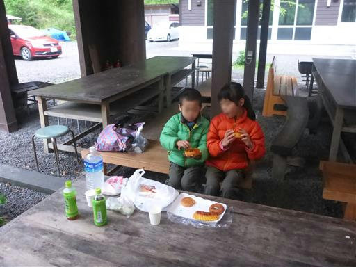
7:40からロープウェイが動き出すとのことで、7:28に駐車場に着いたが、
もうかなり多くの車が停まっている。
すでにロープウェイも動いているようだ。
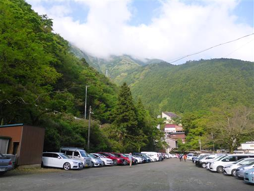
駐車場に車を停めて、急いで準備してロープウェイ乗り場に向かう。
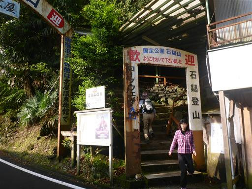
そこそこの列ができている。
待ちながらトイレに行ったりお茶を買ったりして準備を整える。
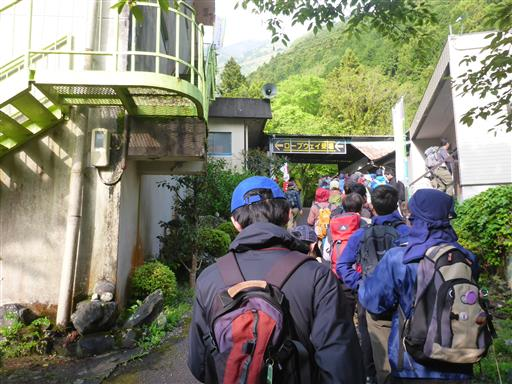
予定より20分遅れの8時ごろにロープウェイに乗れる。
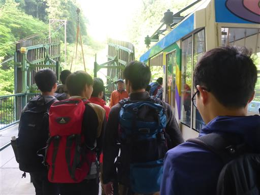
本日は晴れ予報だが、上の方はどんよりとしている。
若干青空も見えるため、ここから天気が良くなることを期待。

山頂成就駅に到着。早速歩き始める。
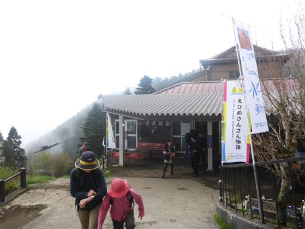
成就社までは広くて緩やかな道を登って行く。

石鎚神社成就社に到着。大きな鳥居がお出迎えだ。
そしてその背後には青空の下に石鎚山が聳えている。
本日は快晴になりそうだ。
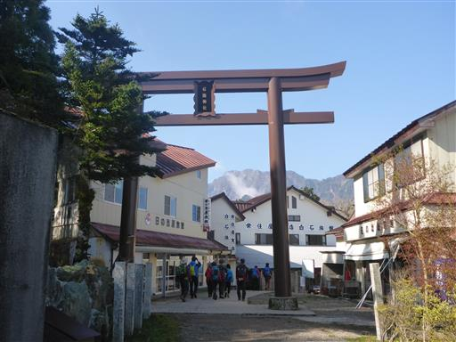
お参りは後にし、神門を潜って先に山頂を目指す。
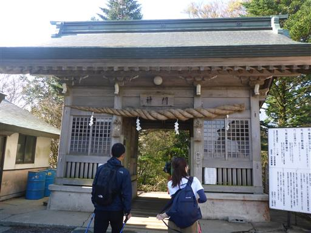
立派なブナの木。
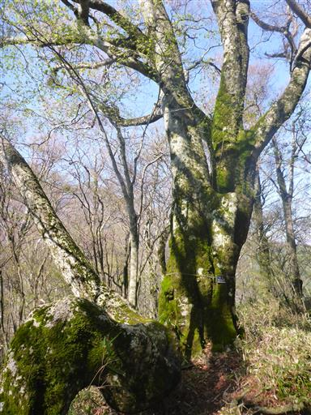
よく整備された登山道。最初はどんどん下っていく。
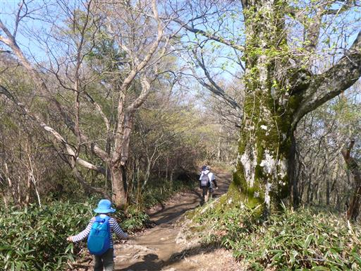
アケボノツツジ。アカヤシオとよく似た美しい花だ。
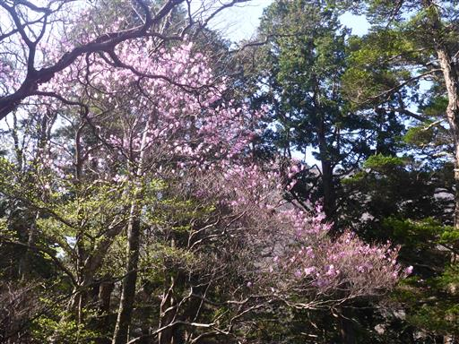
ちょうど新緑の季節。淡い緑色も美しい。
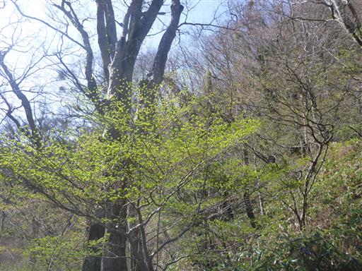
鞍部を過ぎると階段登りが始まる。
この登山道は階段登りが長く続き、足にこたえる。

試しの鎖に到着。ちょっと列ができている。
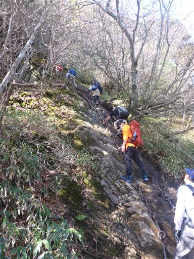
早速鎖に取り付く。石鎚山の鎖は太くて頑丈だ。
鎖が冷たくて手がしびれる。
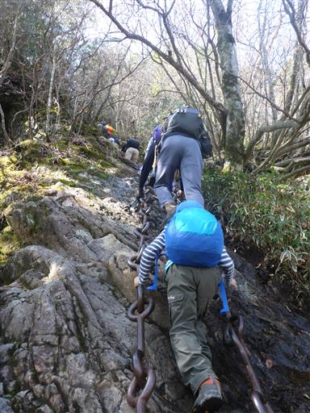
試しの鎖は登った後に下る必要がある。
下りが全く前に進まない。きっと一人渋滞を起こしている人がいるのだろう。
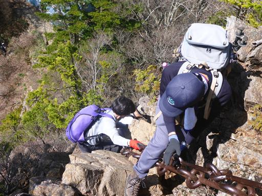
暇なので景色を眺めながらのんびりと待つ。
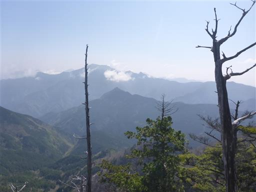
試しの鎖を下りたところに一軒茶屋がある。
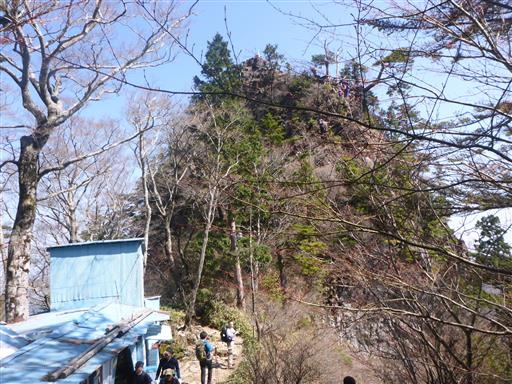
目の前には壁のように聳える石鎚山。ここからあの頂まで登らなければならない。
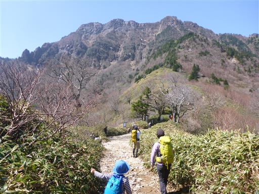
笹原広がる登山道。木は疎らで展望が広がる。
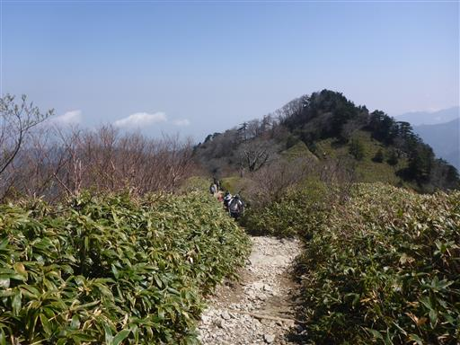
周囲は高い山々に囲まれている。
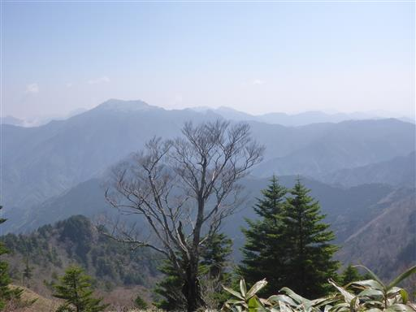
一ノ鎖に到着。息子は挑戦。娘は冷たい鎖が嫌だったようで、妻と迂回路を行く。
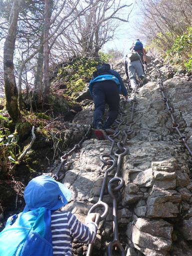
一ノ鎖を超えると、石鎚山がだいぶ近くなる。
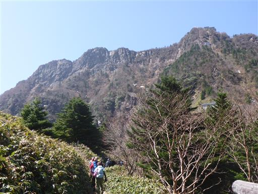
これから辿る二ノ鎖と三ノ鎖が見えている。
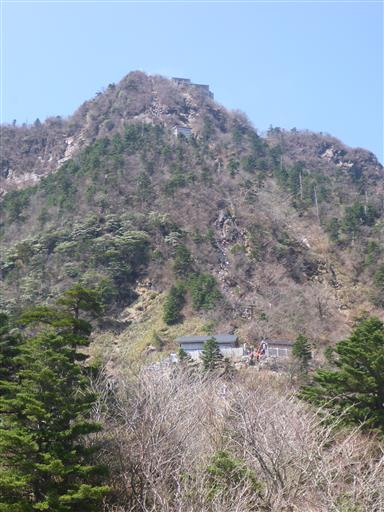
土小屋からのルートと合流する。ここにも鳥居がある。
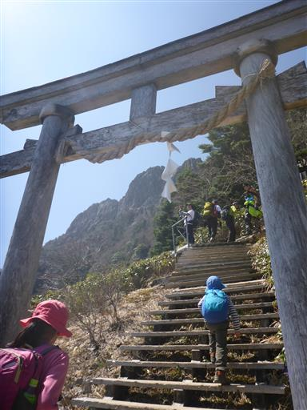
二ノ鎖。人が多くなって少々渋滞気味。
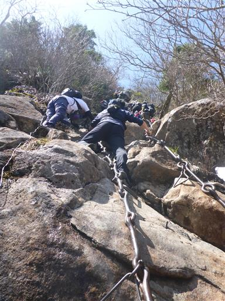
二ノ鎖からは再び娘も挑戦。

岩と岩の間にはあちらこちらにガムのようなものが挟まっている。
落石防止のためだろうか？
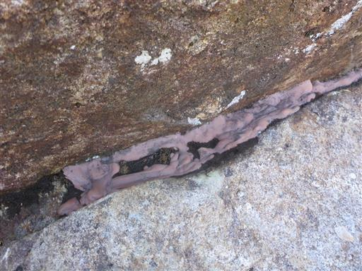
二ノ鎖を超えると、間近に天狗岳が聳える。
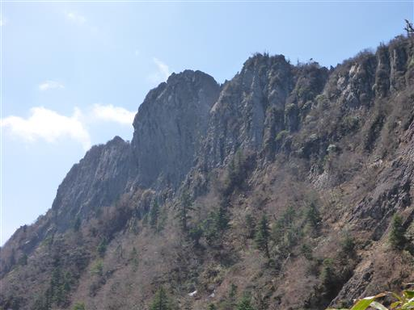
上の方まで来ると日影には残雪が少しだけ残っている。
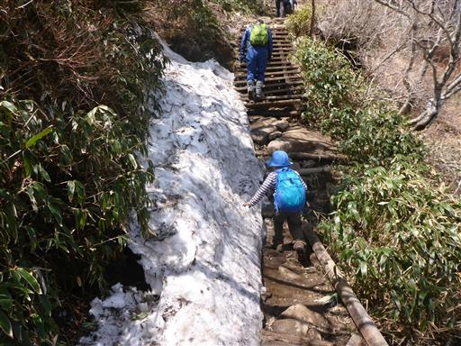
最後の三ノ鎖に到着。
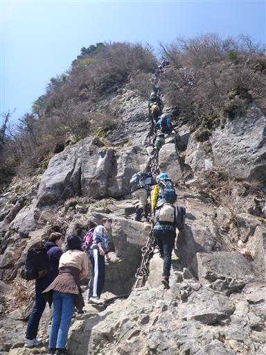
ちょっと渋滞ができている。
待ち時間はおやつを食べたり座ったりして、ちょうど休憩時間に当てることができる。
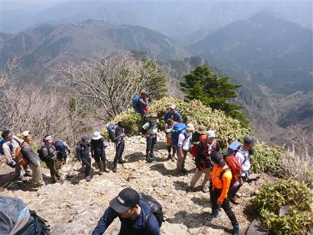
三ノ鎖が一番難易度が高い。
息子は「無理、落ちるー」と言っていたがサポートして何とか登らせた。
あまり高いところが得意ではないし、この鎖場はちょっと難しかったようだ。
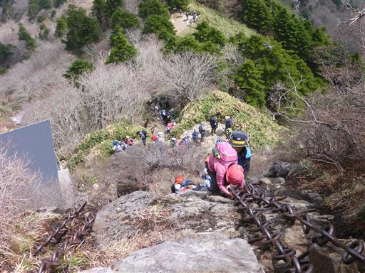
だいぶ上の方まで来ると傾斜もゆるくなり少し楽になる。写真を撮る余裕も出てくる。
少々もたついたが、何とか前の人に付いて行っている。
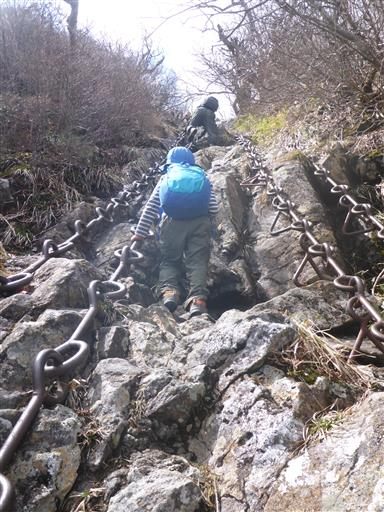
三ノ鎖を登ったらそこは石鎚山弥山山頂。
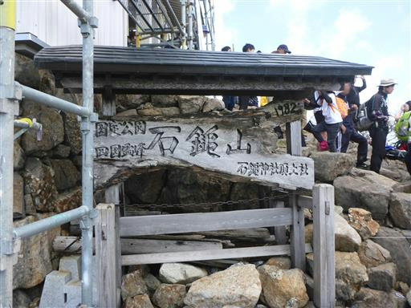
天狗岳の有名すぎる姿が目の前に広がる。
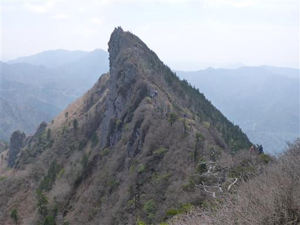
山頂には鎖でグルグルにまかれた大岩がある。
一体これは何だろう？
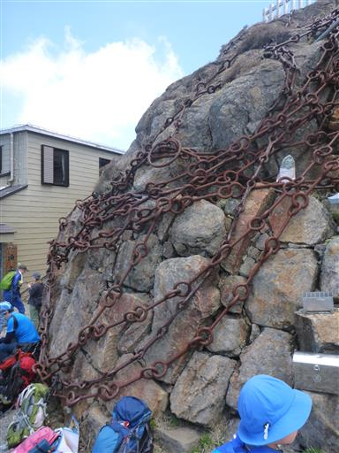
弥山山頂では休まず、混雑する前に天狗岳に行くことにする。
天狗岳に向かう最初の鎖場は登りと下りで同じルートのため、
待ち時間が発生する。
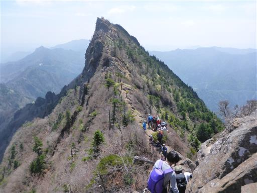
天狗岳に向かって痩せた尾根を歩く。
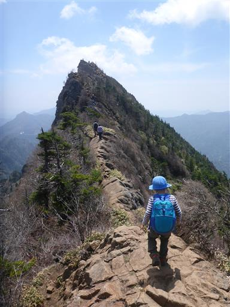
登山道は狭い。すれ違いに気を使う。
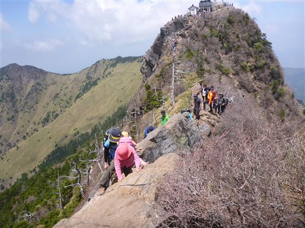
天狗岳が近づいてきた。左側は断崖絶壁だ。
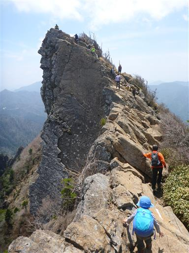
下を覗くと遥か下方まで崖が続いている。
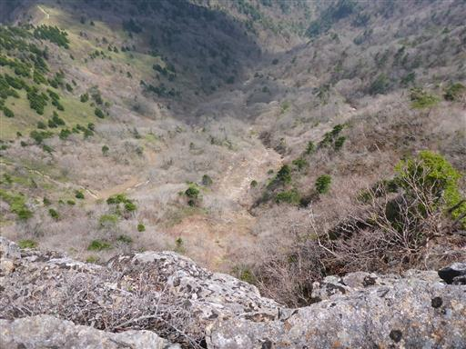
ついに天狗岳山頂に到着する。標高1982m。
子供の時、親に連れられて来たときは天気が悪く、鎖場も天狗岳も行けなかった。
ようやくリベンジを果たすことができた。
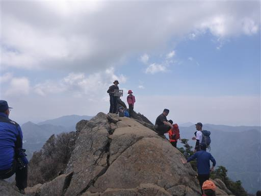
山頂からはもちろん素晴らしい展望が広がる。
奥に見えるのは二ノ森。あちらから縦走するのも楽しそうだ。
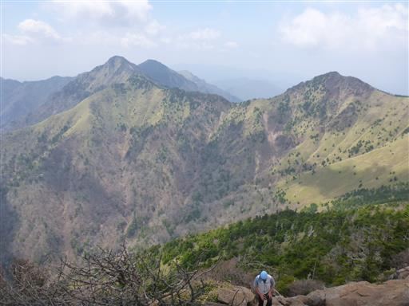
弥山は足の踏み場もないほどの人だらけ。
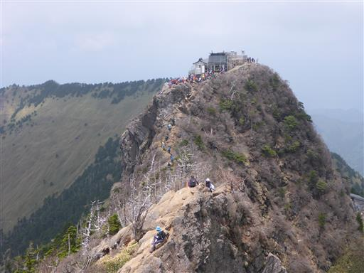
一方こちらは比較的空いている。
こちらの方が広々しているので、山頂近くの岩場で昼食をとることにする。
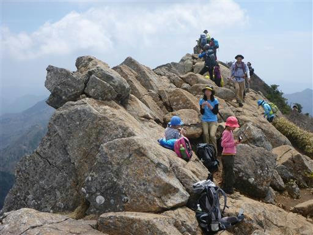
崖を覗き込む。何が見えるのだろう？
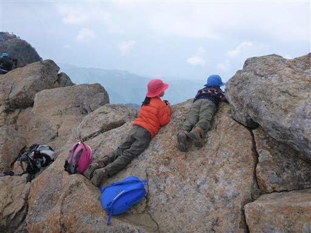
天狗岳山頂で何を思う？
娘は奥にあるピークにも行きたいと言い出したが、時間が無いためパス。
引き返すことにする。
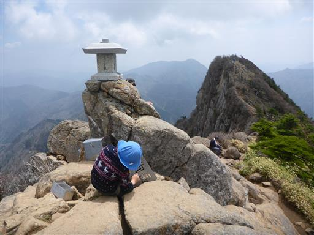
弥山山頂まで戻ってくる。
大混雑なので、ここでは休まずそのまま下山することにする。
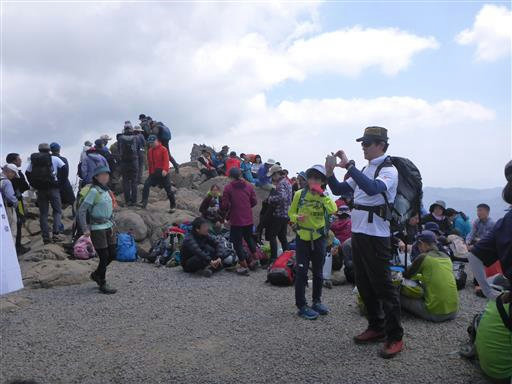
山頂直下のトイレに立ち寄る。トイレがあるのはありがたい。

下山は鎖場を全て迂回。
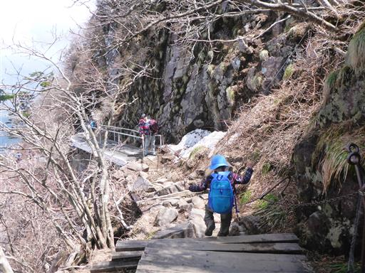
鎖場の迂回ルートは鉄製の階段が続く。
（安全な）山側には手すりがあるのに、なぜ（危険な）崖側には手すりがないのかと、
息子が言っている。もっともな指摘だ。
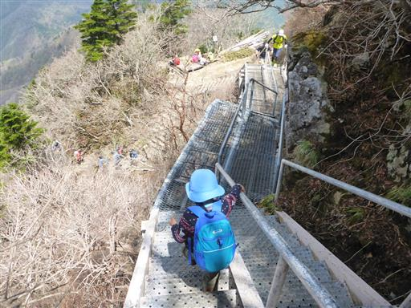
どんどん下る。階段続きで足にやさしくない道だ。
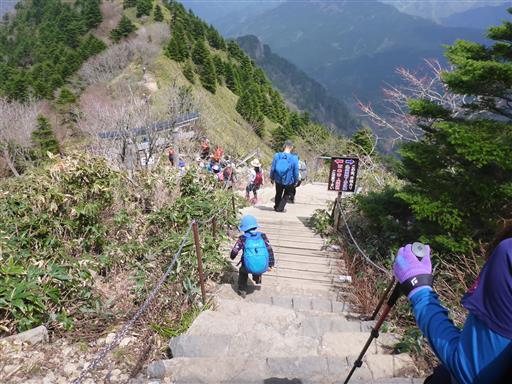
一軒茶屋まで戻ってくる。

周囲はアケボノツツジだ。この時期、標高の高い場所には咲いていなかった。
コブに覆われた立派な木。これもブナだろうか？
最後の登りは娘がラストスパートでぐんぐん歩いていく。
付いていくのが大変だ。
石鎚神社成就社に到着。参拝をすます。
最後はロープウェイ駅まで展望を眺めながらのんびり歩く。
遠くに見えるのは瓶ヶ森だろうか？
改札を始めるとの放送が入ったので、名残惜しいが大急ぎで駅まで移動。
新緑が輝く斜面をロープウェイが下っていく。
石鎚山は名峰と名高いだけあって、素晴らしい山だった。
大混雑が心配だったが、登山に支障が出るほどの混雑ではなく、
天気にも恵まれて良い登山だった。
下山後は旅館歓喜庵の温泉に入る。
白濁の湯で泥のような温泉成分が浴槽の底にたまっている。
息子は喜んでいたが、娘は感触が嫌だったようだ。
子供料金はないのだが、子供にはアイスをサービスしてくれた。
本日は東予運動公園のキャンプ場にテントを張る。
もともと日程に余裕があれば予約不可の姫鶴平キャンプ場に行きたいと思っていて、
本日はどこも予約を取っておらず、不安を抱えながら来てみたのだが、
案外ガラガラだった。
遠くの方に本日登った石鎚山が見えている。
夕食前に少しボールで遊ぶ。ようやく子供との時間を少し作れた。
やっぱり晴れの日のキャンプは気持ちよい。